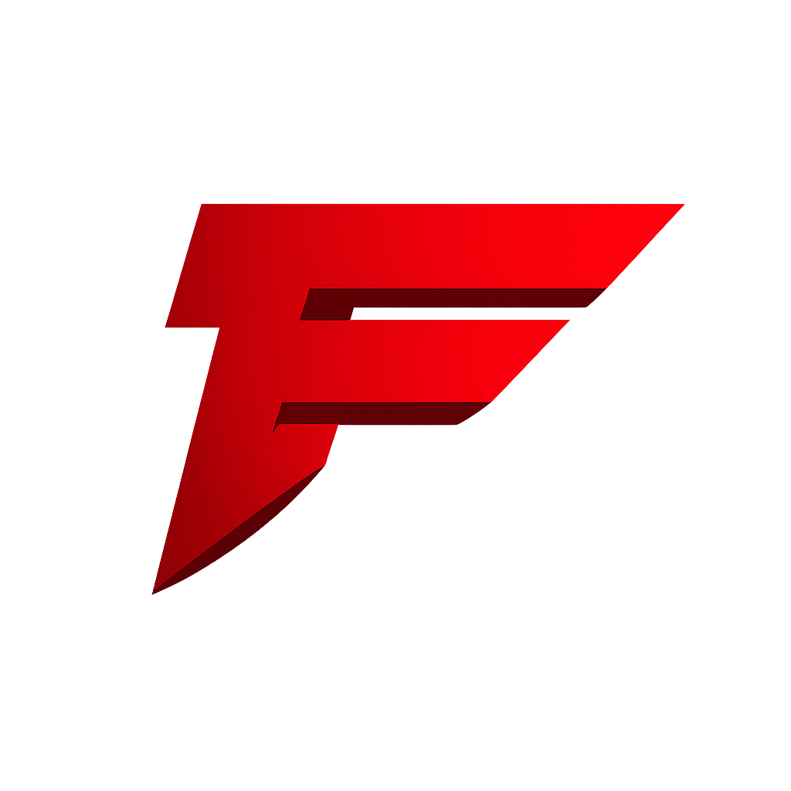

JTV
VIDEO FILE

FRIEND SIGNAL 085
The moid who helped bring the videos back.
VAZEN would not exist without Jonathan, and FinchyNoz probably would not have returned either. This page is for the friend behind the chaos, the reactions and half the ideas that somehow become videos.
CREATOR FILE
Coming back to YouTube is easier when there is someone beside you who makes recording feel fun again. Jonathan became that person: a friend, collaborator and permanent part of the FinchyNoz story.
CHANNEL ARCHIVE
SIGNAL CONNECTED
VIDEO FILE
VIDEO FILE
PROCESSING
NEXT FILE
The archive expands whenever Jonathan uploads again.
CHECK FOR UPLOADS ↗DUAL SIGNAL
Reactions, professional nonsense, Gamble With Your Friends, VAZEN Olympics and whatever happens in the Discord call.